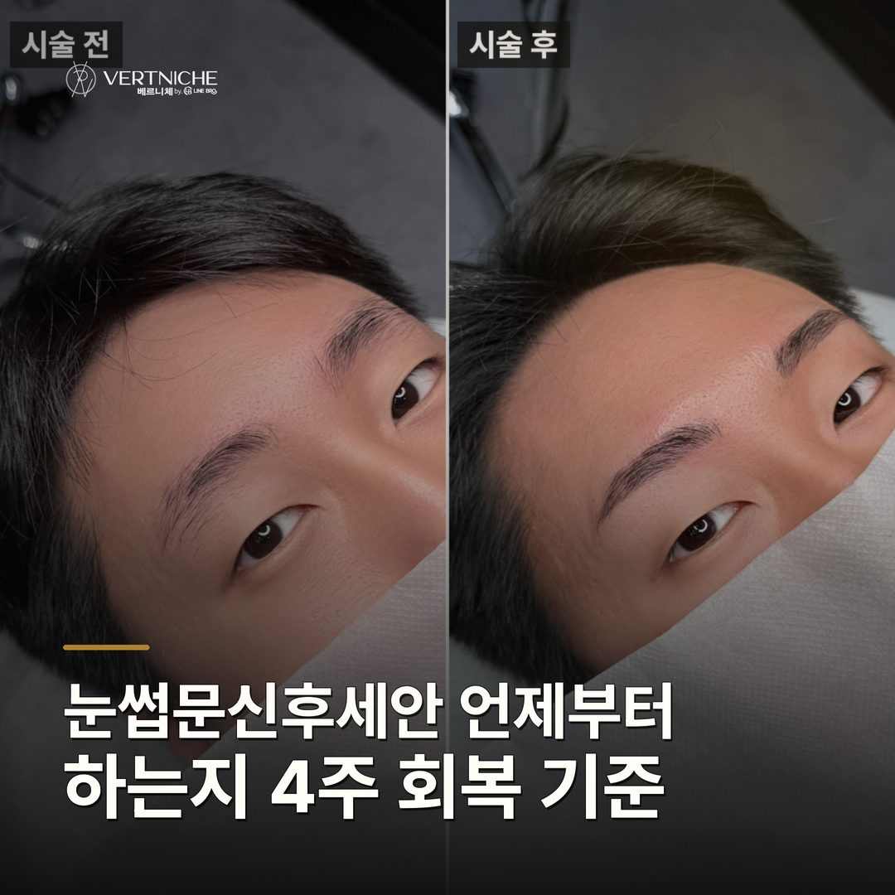
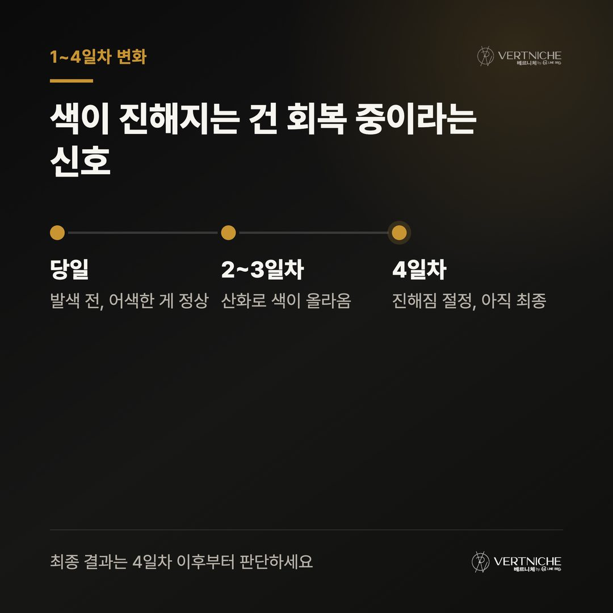
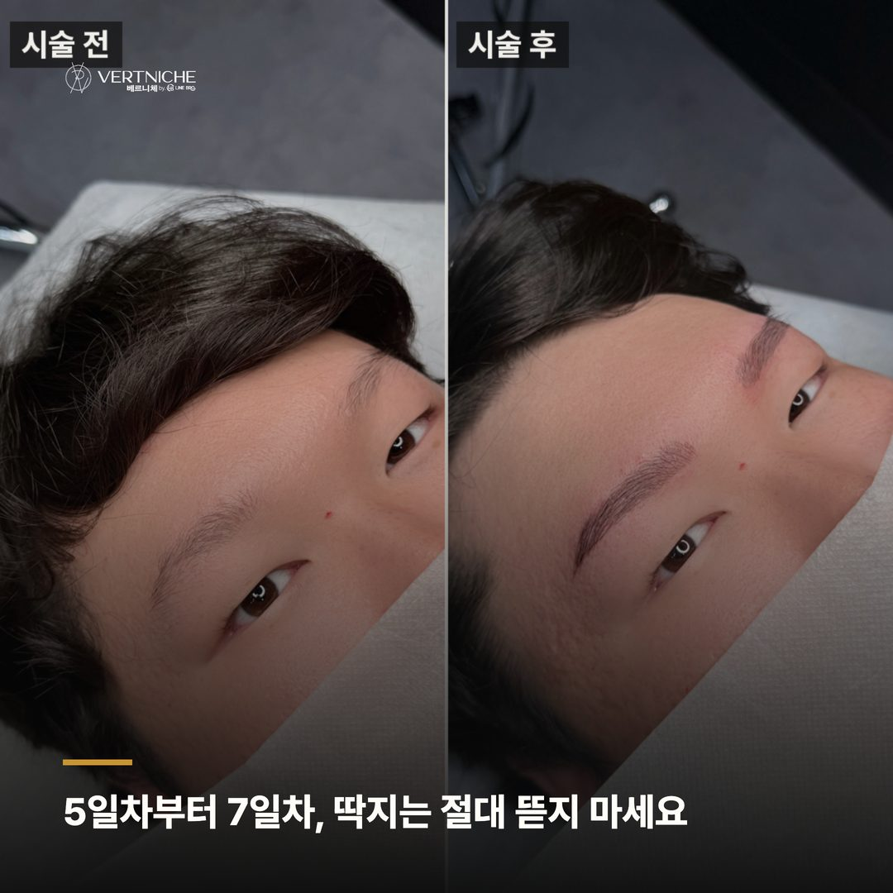
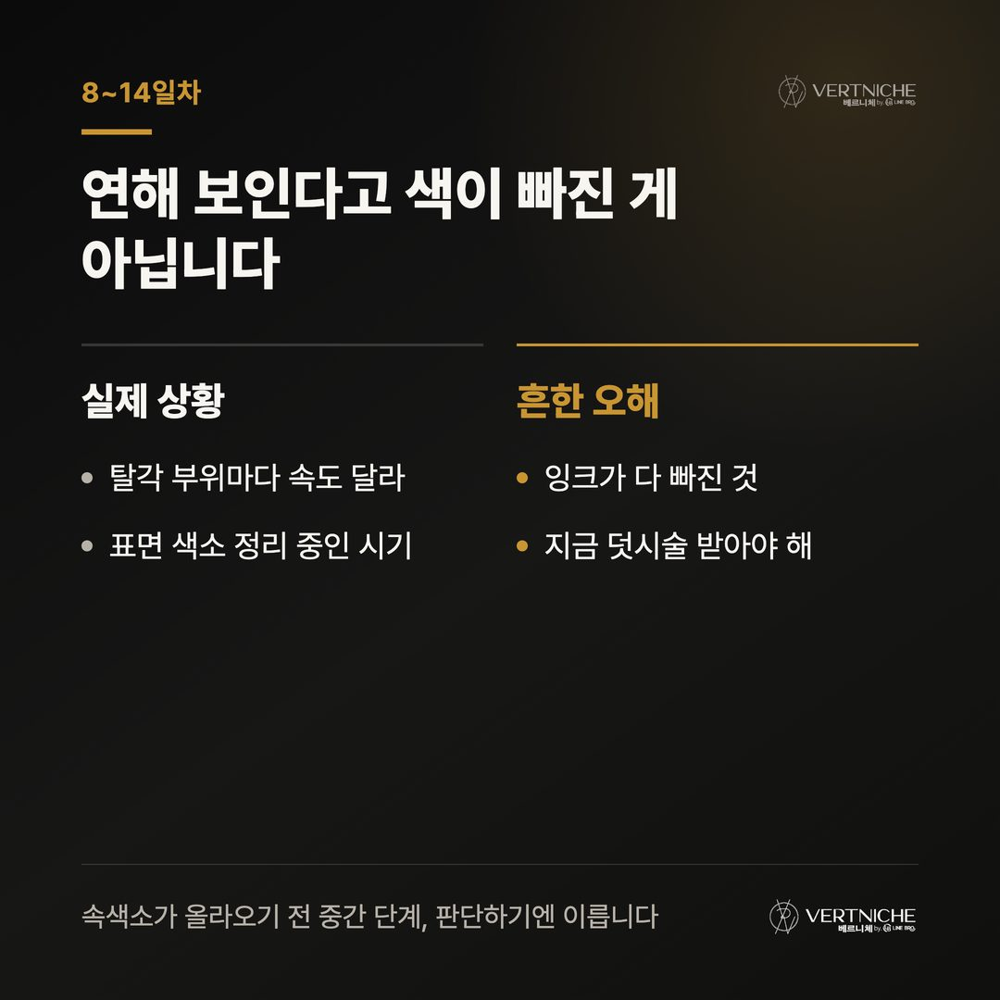
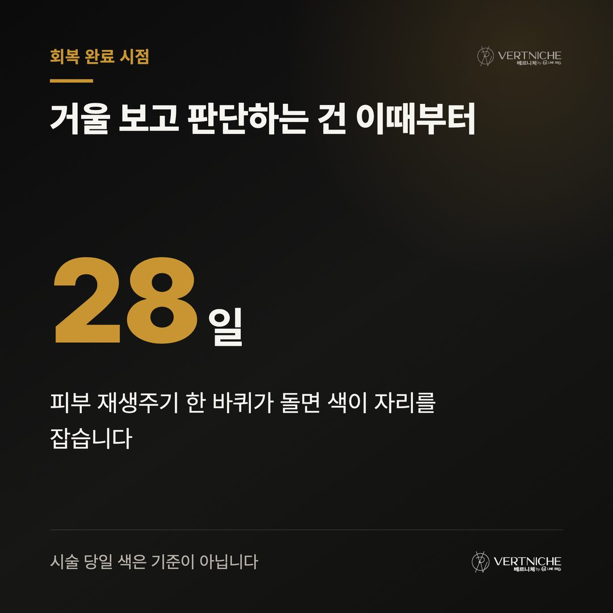
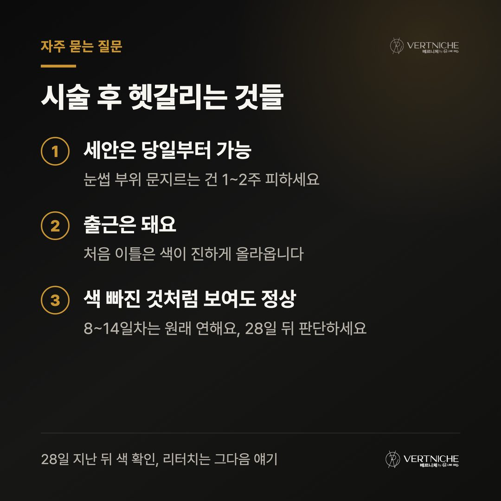
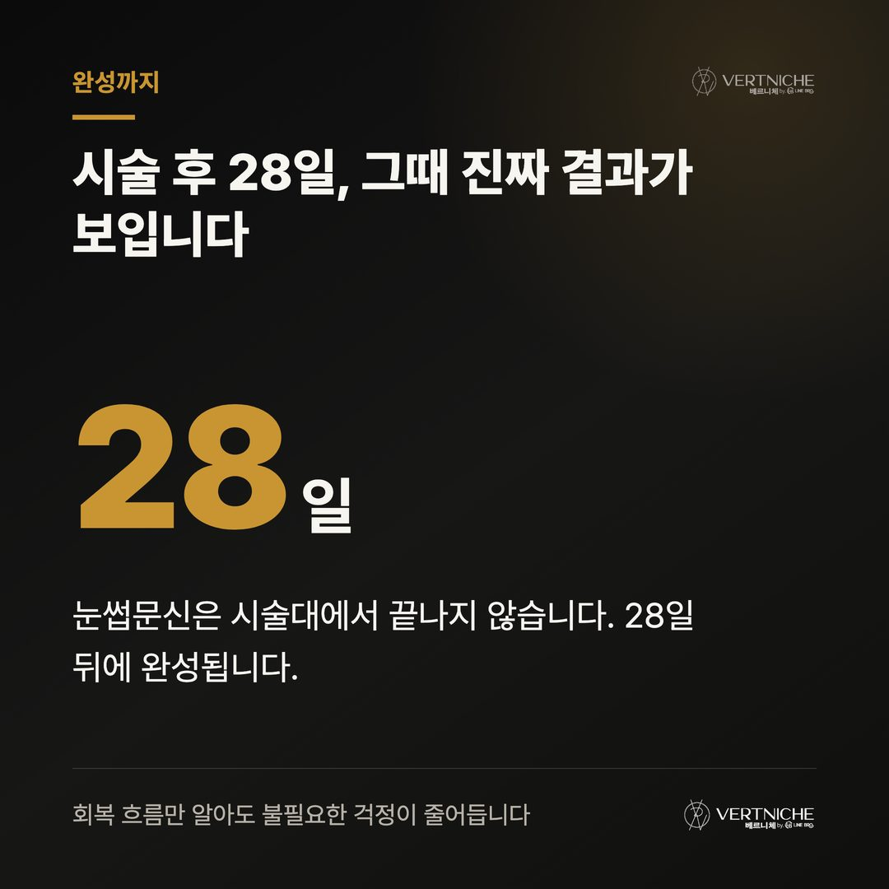
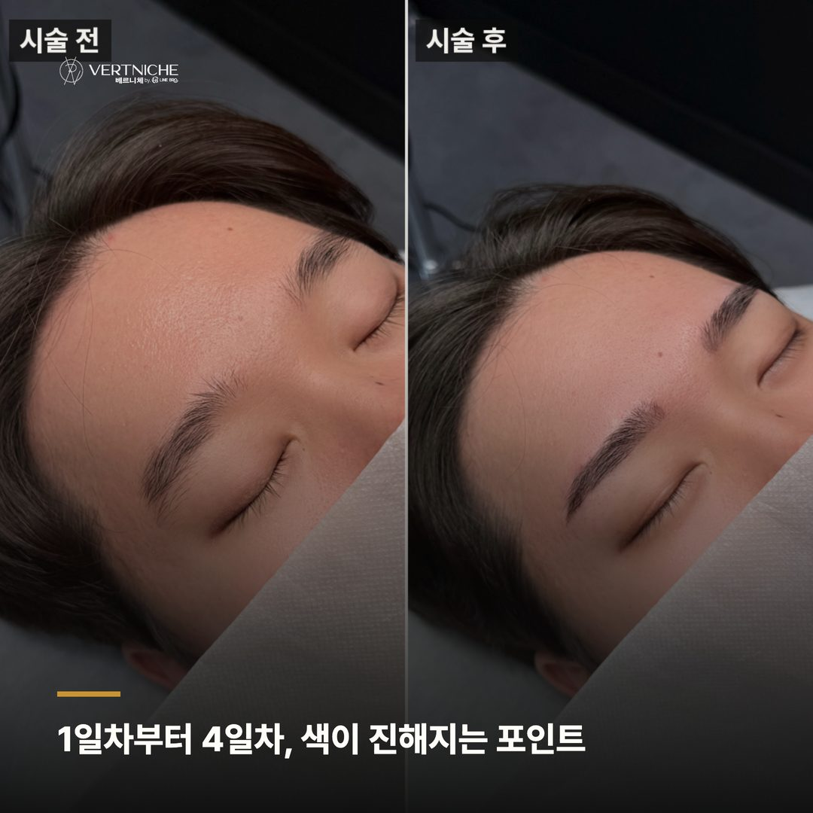
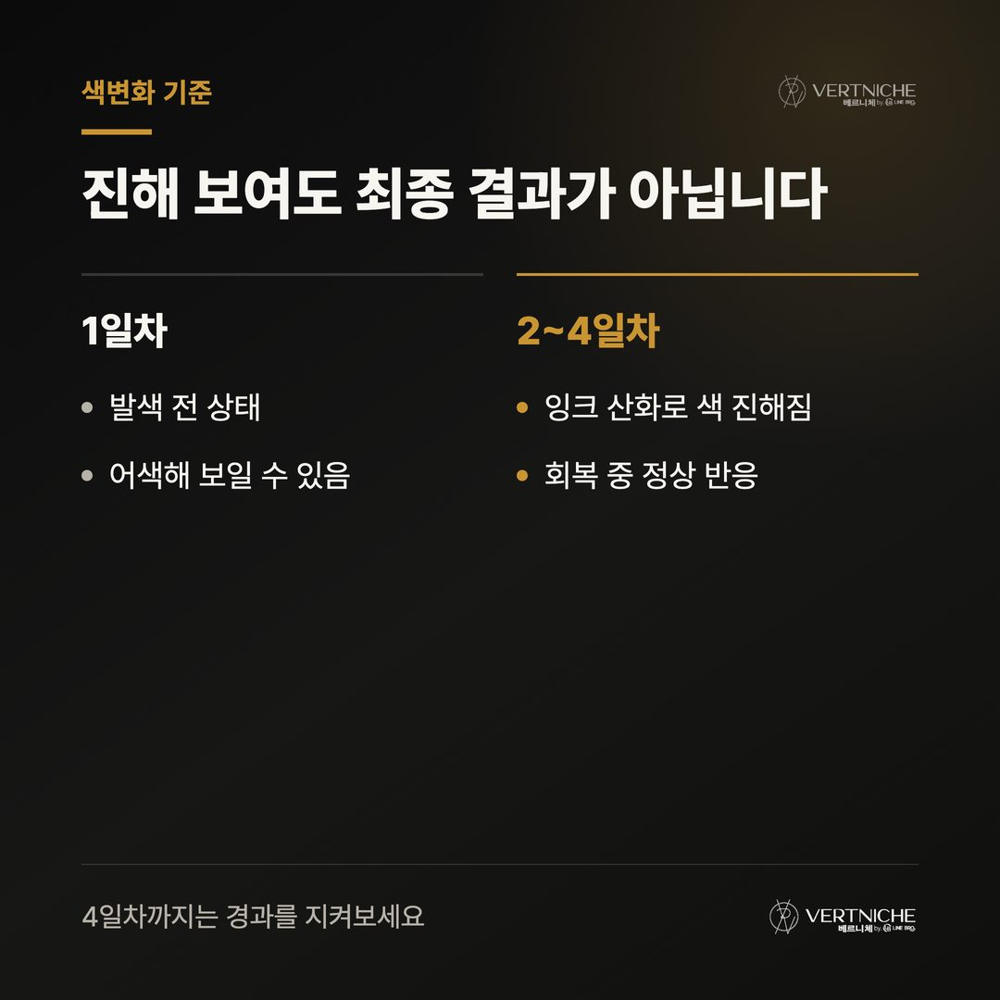
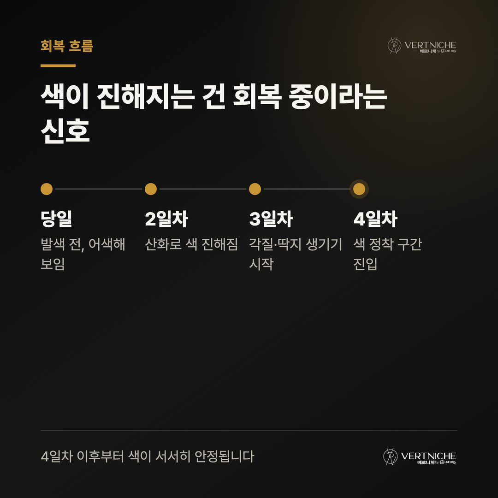

눈썹문신후세안 언제부터 하는지 4주 회복 기준

눈썹문신 받고 나서 아무 말도 못 들었다는 분, 꽤 많아요. 시술만 딱 끝내고, 관리는 알아서 하라는 식으로 보내는 거죠. 그러다 2일차에 색이 갑자기 진해지면 놀라고, 1주일 지나 딱지 생기면 뜯고, 색 연해지면 실패한 줄 알고 후회하고.
사실 눈썹문신 관리는 시술대에서 내려온 그 순간부터 시작이에요. 베르니체에서 7년간 5,500명 넘게 케어하면서 확실히 느낀 건, 결과를 가르는 건 시술 실력만이 아니라 첫 2주를 어떻게 보내느냐
라는 거더라고요. 회복 흐름을 미리 알고 있으면 중간에 흔들릴 일이 없어요.
@
1~4일차 : 색이 진해지는 게 정상이에요
시술 당일은 잉크가 아직 발색되기 전이라 오히려 어색하게 느껴질 수 있어요. 2일차부터가 문제인데, 잉크가 산화되면서 전날보다 훨씬 진하게 올라오거든요. "너무 진한 거 아닌가?" 싶어서 당황하는 분들이 많은데, 이건 회복 과정에서 반드시 지나가는 구간이에요. 최종 결과가 아닙니다.
이 시기에 신경 써야 하는 건 딱 하나, 물과 땀을 피하는 것이에요. 세안은 당일부터 해도 되지만 폼클렌징은 눈썹 부위를 피해서 하세요. 이마에 땀이 나는 운동이나 사우나는 미뤄두는 게 좋아요. 상처가 아무는 동안 자극이 적을수록 착색이 잘 잡히거든요.
5~7일차 : 딱지는 손 대지 마세요
탈각이 시작되는 구간이에요. 딱지나 각질이 일어나면서 눈썹이 부분부분 벗겨지는데, 여기서 가장 많이 하는 실수가 손으로 뜯는 거죠. 자연스럽게 떨어지기 전에 억지로 당기면 그 자리 색소가 같이 빠져요. 그럼 눈썹에 빈 자리가 생기고 나중에 밀도가 고르지 않게 됩니다.
바셀린이나 재생크림도 이 시기엔 오히려 안 바르는 게 나아요. 억지로 촉촉하게 만들면 딱지가 물러져서 더 빨리 떨어지거든요. 그냥 가만히 두는 게 맞아요. 딱지가 아예 생기지 않는 분도 있는데, 그것도 정상이에요.
8~14일차 : 연해 보여도 실패가 아니에요
탈각이 끝나면 이번엔 반대로 눈썹이 흐릿해져요. "잉크가 다 빠진 거 아닌가" 싶을 만큼 연하게 보이는데, 이게 이 시기의 특징이에요. 상처는 한꺼번에 고르게 떨어지는 게 아니라 움직임이 많은 부분부터 조금씩 벗겨지거든요. 눈썹 앞뒤는 탈각이 끝났는데 중간은 아직 덜 떨어진 경우, 그 밀도 차이를 "색이 빠졌다"고 오해하는 분들이 많아요.
시기
눈에 보이는 변화
실제 상태
2~4일차
색이 진해짐
잉크 산화, 정상
5~7일차
딱지·각질
탈각 진행 중
8~14일차
색이 연해짐
표면 색소 정리 중
15~28일차
다시 또렷해짐
속색소 안정화
이 시기에 후회해서 다른 곳 가서 덧시술 받는 분들이 있는데, 그러지 않으셔도 돼요. 피부 표면 색소가 정리되고 속색소가 아직 올라오지 않은 중간 지점이라 판단하기엔 너무 이른 시기예요. 관리 원칙은 여전히 같아요. 물, 땀, 자극 조심. 폼클렌징은 눈썹 부위를 피하고, 수영이나 사우나는 2주 지날 때까지 참으세요.
15~28일차 : 이때 보이는 게 진짜 결과예요
15일차를 넘기면서 피부 속에 자리 잡은 색소가 서서히 올라와요. 연했던 눈썹이 다시 또렷해지고, 기존 눈썹결과 자연스럽게 어우러지기 시작하죠. 28일차쯤 피부 재생주기가 한 바퀴 돌면서 색이 안정돼요. 이때 거울 보고 판단하시면 됩니다. 시술 당일이 아니라 지금이 진짜 완성이에요.
자주 나오는 질문 세 가지
세안은 언제부터 해도 되나요? 당일부터 세안 자체는 가능해요. 다만 폼클렌징은 1~2주 동안 눈썹 부위를 피해서 하세요. 물이 살짝 닿는 건 괜찮은데, 문지르거나 오래 적시는 건 피하는 게 좋아요.
직장인인데 다음날 바로 출근해도 되나요? 출근 자체는 돼요. 첫 2일은 색이 진하게 올라오는 시기라 그 점만 감안하시면 되고요. 땀이 많이 나는 현장직이거나 사우나·수영을 자주 하신다면, 그 일정이 없는 주에 시술을 잡으시는 걸 권해요.
딱지 떨어지고 색이 너무 빠진 것 같은데 리터치 받아야 하나요? 8~14일차 사이엔 원래 연해 보여요. 이 시기엔 판단 자체를 미루시는 게 맞아요. 28일 지나서 색소가 다 올라온 뒤에 보시고, 그때 아쉬운 부분이 있으면 그때 리터치를 생각하셔도 충분합니다.
포스팅 요약
• 눈썹문신 관리는 시술 직후부터 시작이고, 완성 기준은 시술일로부터 28일
• 2~4일차 진해짐, 5~7일차 탈각, 8~14일차 연해짐은 모두 정상 회복 과정
• 딱지 뜯기·재생크림 과용·조기 리터치가 결과를 망치는 가장 흔한 실수
궁금한 게 생기면 아래 문의하거나, 회복 사례는 인스타에 계속 올리고 있어요.
더 보기 / 상담
남자관리 사례랑 눈썹문신 결과는 인스타에 계속 올리고 있어요. 시술 사진이랑 관리 팁은 아래 링크에서 더 보실 수 있습니다.
눈썹문신 완성 = 시술일 + 28일 (피부 재생주기 1회전)
회복 흐름을 미리 알고 있으면, 진해지는 시기에 놀라지 않고 연해지는 시기에 후회하지 않아요. 그 사이를 버티는 게 생각보다 훨씬 쉬워지거든요.
시술 사진









이 글은 네이버 블로그에도 같은 내용으로 올라가 있습니다.